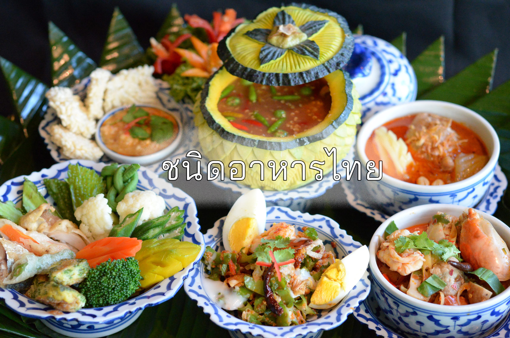
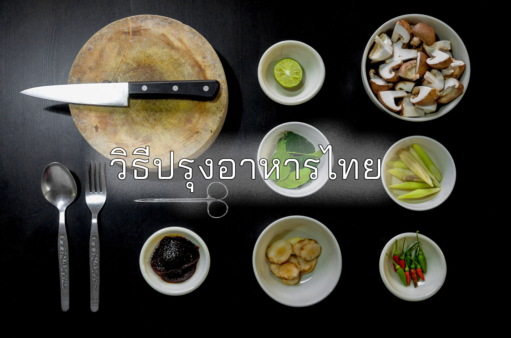
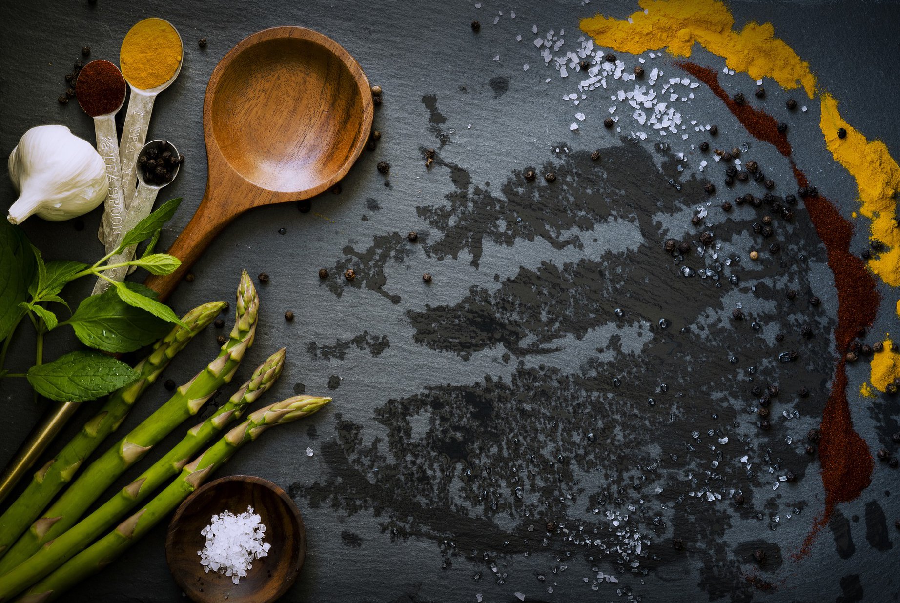
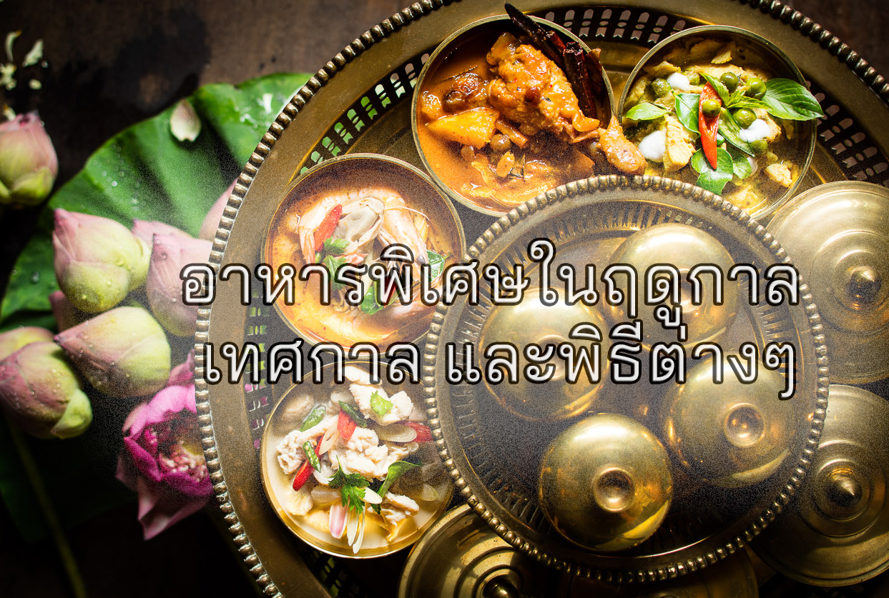
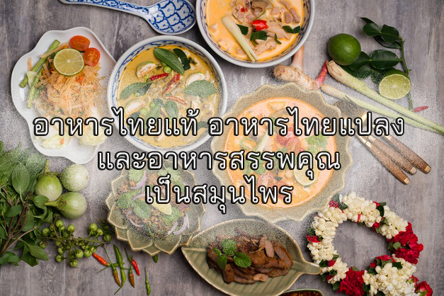

หน้าหลัก |
เมนูไทย |
ร้านไทย |
เกี่ยวกับเรา
อาหารไทย
ประเทศไทยเป็นประเทศที่อุดมสมบูรณ์ไปด้วยพืชพันธ์ธัญญาหาร
สมดังคำกล่าวที่ว่า
"ในน้ำมีปลา ในนามีข้าว"
คนไทยรู้จักที่จะนำทรัพยากรเหล่านี้มาปรุงเป็นอาหารไทย
วิธีปรุงอาหารเป็นมรดกตกทอดที่ทำสืบเนื่องกันมานับร้อยๆปี

ชนิดอาหารไทย

วิธีปรุงอาหารไทย

การปรุงแต่งรสชาติและกลิ่นของอาหาร

อาหารพิเศษในฤดูกาล เทศกาล และพิธีต่างๆ

อาหารไทยแท้ อาหารไทยแปลง
และอาหารสรรพคุณเป็นสมุนไพร